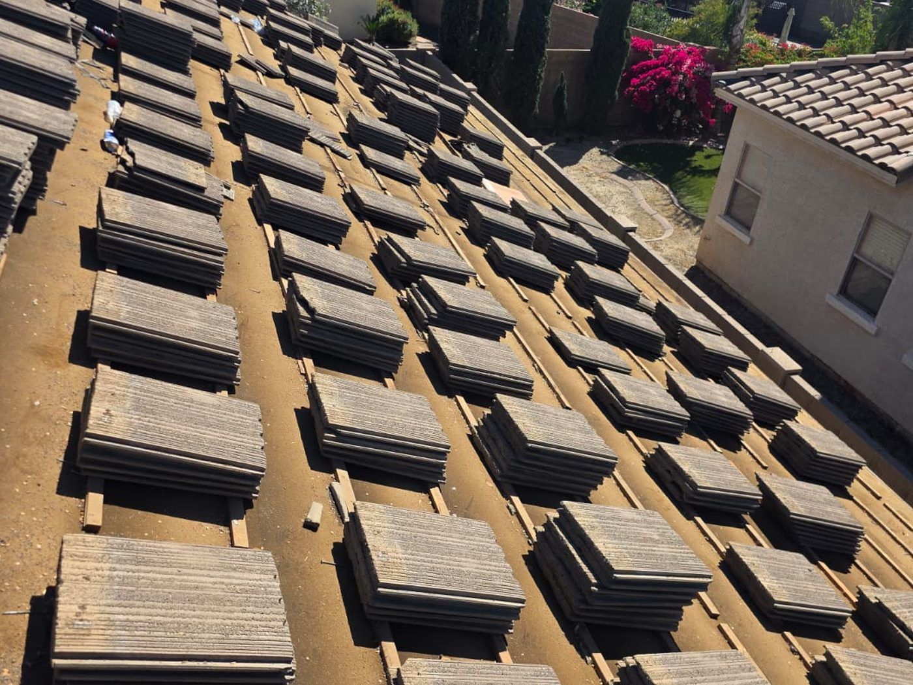
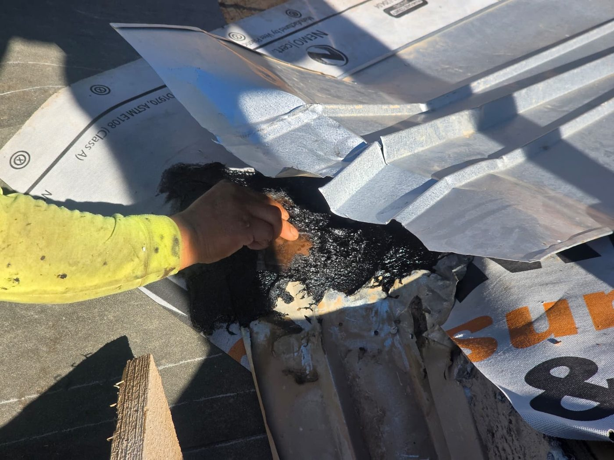
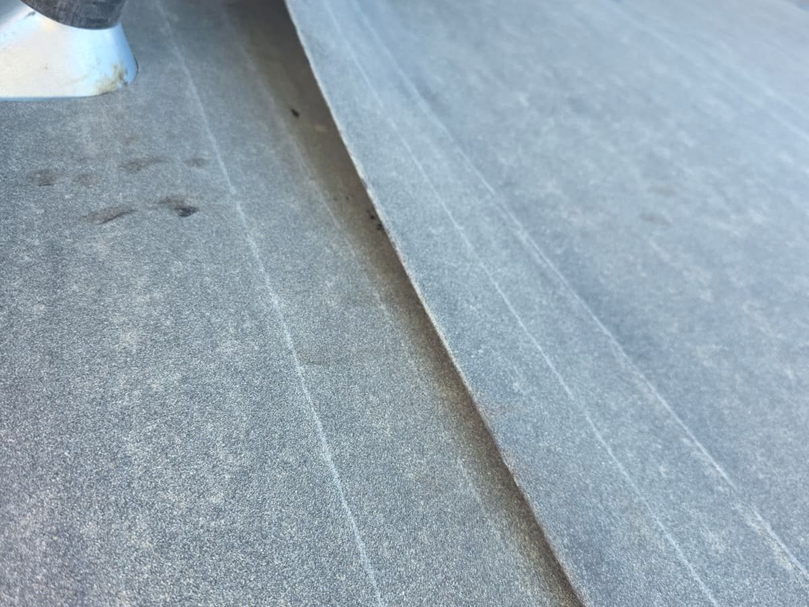
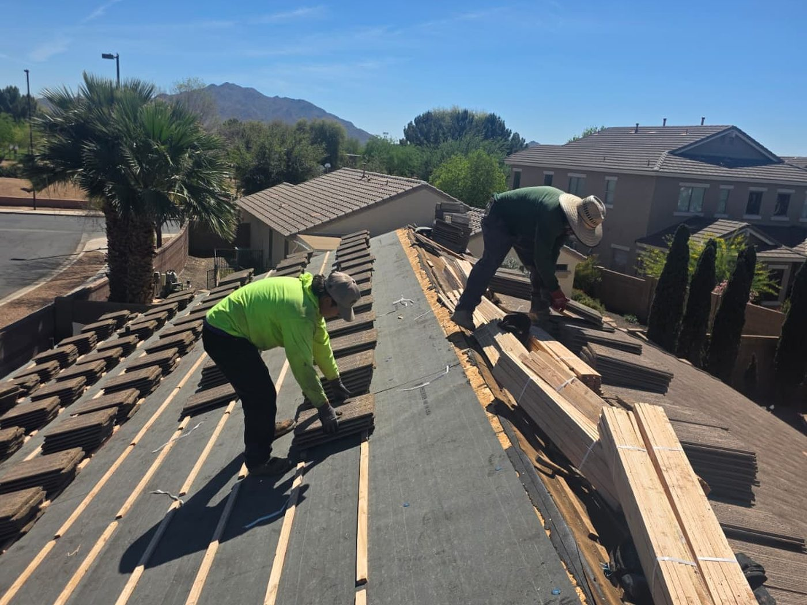
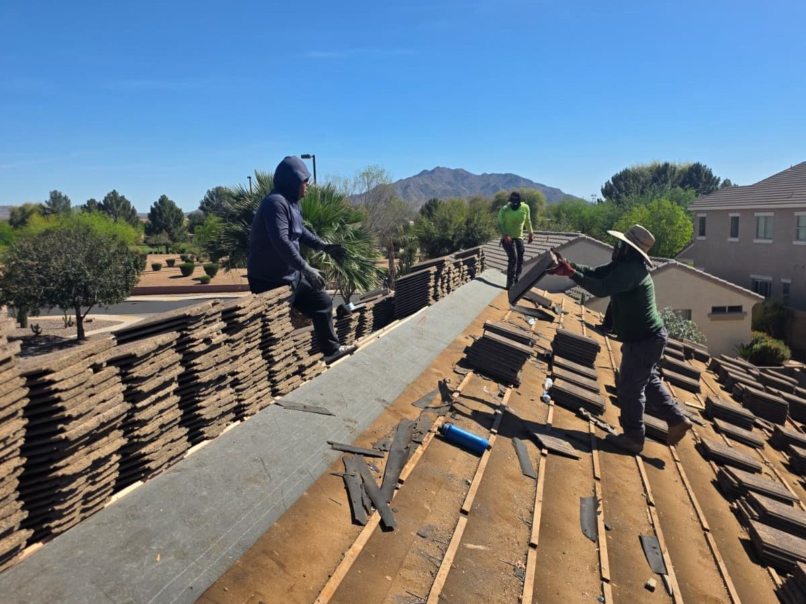

Tile roofing
Good for Arizona style and heat, but underlayment, valleys, and broken tiles need careful review.
Gallery
Real roof-process photos from tile tear-off, underlayment work, flashing details, tile staging, and completed Arizona roof work.
Inspection proof
Use this page to show roof conditions, repair details, and finished work so the homeowner sees proof before calling.
Real tile process
These photos show the kind of details homeowners need to see: exposed deck areas, underlayment, flashing work, staged tile, and the roof coming back together.
1 / 5





Each gallery entry should include roof system, concern, service area, scope type, and whether the image is before, during, or after work.
Good for Arizona style and heat, but underlayment, valleys, and broken tiles need careful review.
Flashing, penetrations, valleys, and transitions should be photographed close enough to understand the scope.
Finished roof condition, yard cleanup, and final handoff photos should be documented after approved work.
Use the main estimate form when you are ready to talk through the roof condition with Quest.